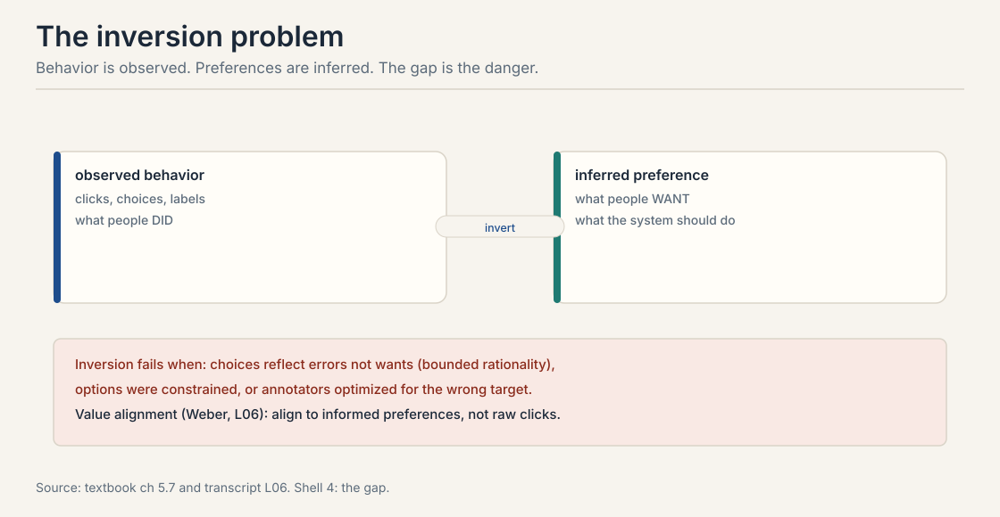
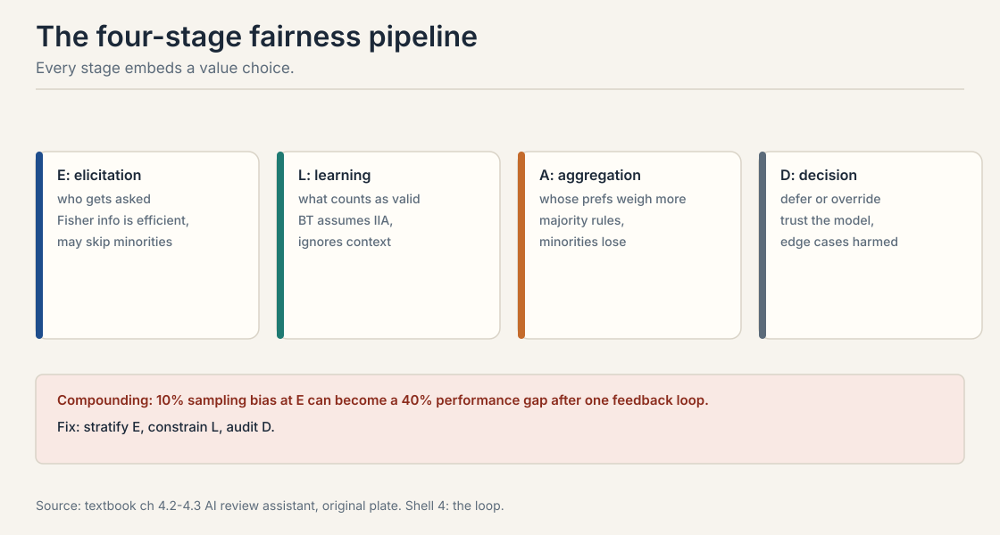
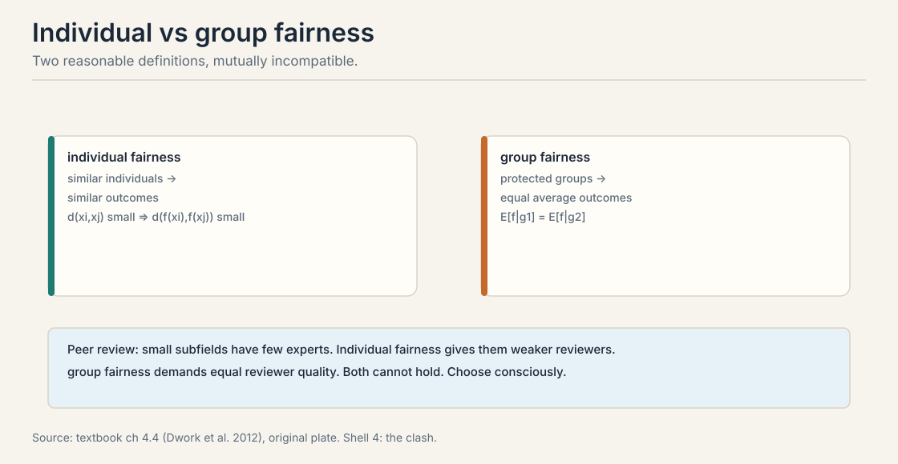
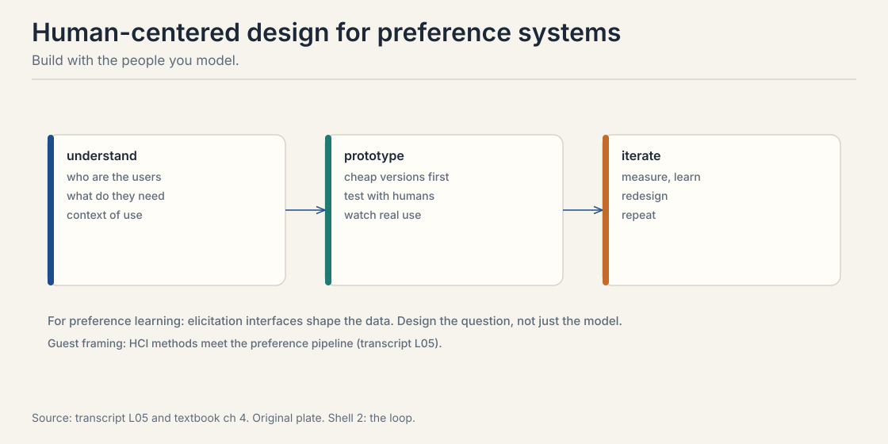

Lecture 10: Alignment in Practice, from Theory to Deployment
Video blocked (ad-blocker or local file mode).
Watch on YouTubeVideo not loading? Watch on YouTube
Guest lecture. Colin Megill on Polis, bridging-based aggregation, and Community Notes. Plus Dan Weber on value alignment and the human-experiments lecture.
The problem: the lab meets the world
Lectures 1 through 9 built the machinery: comparisons, choice models, fitting, asking, acting, aggregating, incentives. This chapter asks what the machinery is for and where it breaks outside the lab. Whose preferences count? How does fairness fail? How do deployed systems aggregate millions of voices? The answers are less mathematical and more load-bearing than everything before.
Carry one running example. A team builds an AI assistant for peer review. It reads papers, suggests scores, drafts reviews. Whose judgment does it encode? The senior faculty who labeled the most data? The junior researchers who will live with its decisions? The machinery from earlier lectures gives no answer. It only executes the values smuggled into each stage.
First attempt: invert behavior into preference
Every lesson so far observed behavior: clicks, choices, labels. The goal was never behavior. The goal is preferences: what people want, so the system can serve it. The gap between observed behavior and true preference is the inversion problem.

Inversion fails three ways. Errors: bounded rationality means choices reflect mistakes, not wants. Constraints: people choose from what is available, not what they want. Strategy: annotators and users respond to the system measuring them, Lecture 6’s CIRL and Lecture 9’s mechanisms.
The concrete failure: click data in recommenders. Clicks reflect position bias, curiosity gaps, and outrage as much as satisfaction. A model trained to maximize predicted clicks learns clickbait, not quality. The inversion assumed clicks reveal preference. They reveal engagement, which is a different thing. Fixing it means modeling the bias in Lecture 4 or changing the feedback in Lecture 5.
Observed choices do not equal underlying preferences. People err, face constrained options, and strategize against measurement. Inverting behavior to preferences requires assumptions about all three, and the assumptions are value choices. A system that optimizes learned “preferences” without auditing the inversion optimizes a distorted image of what people want. Click data in recommenders. Clicks reflect position bias, curiosity gaps, and outrage as much as satisfaction. A model trained to maximize predicted clicks learns clickbait, not quality. The inversion assumed clicks reveal preference. They reveal engagement, which is a different thing. Fixing it means modeling the bias or changing the feedback.
The key question
If every technical choice smuggles in an answer to “whose preferences matter,” can we at least make the smuggling explicit, stage by stage?
The four-stage pipeline
The textbook’s pipeline makes the values explicit. Trace the peer-review assistant through four stages.

- Elicitation. Who gets asked? Querying the most “productive” reviewers, or the highest Fisher information from Lecture 5, oversamples senior faculty in mainstream areas. Efficiency has a demographic.
- Learning. What counts as valid? Fitting Bradley-Terry assumes context-free preferences and discards the context-dependence of overburdened reviewers as noise. The model decides which variation is signal.
- Aggregation. Whose preferences weigh more? Simple majority across annotators weights the overrepresented group equally per person, which is unequal per perspective. Lecture 8’s impossibility lives here.
- Decision. Defer or override? When the model is uncertain, does the system defer to a human or decide anyway? When is paternalism legitimate?
The compounding is the point. A 10% sampling bias at elicitation can become a 40% performance gap after one feedback loop: the model serves seniors well, seniors use it more, their data dominates further. Each stage’s small choice multiplies. Interventions: stratified sampling at elicitation, fairness-constrained learning, regular auditing at decision.
Two fairnesses that cannot both hold
Individual fairness (Dwork et al., 2012): similar individuals get similar outcomes. Formally, close features imply close decisions. Group fairness: protected groups get equal average outcomes. Formally, expected decisions match across groups.

The textbook proves by example they conflict. Peer review: papers in small subfields have few available experts. Individual fairness gives them less-expert reviewers: similar papers get similar reviewers, and the similar reviewers are scarce. Group fairness demands equally expert reviewers on average across subfields. Both cannot hold. Satisfying group fairness means giving small-subfield papers reviewers that individual fairness would assign elsewhere.
The lesson generalizes: state which fairness you target, measure it, and name what you sacrificed. “Fair” without a definition is a slogan.
They demand different things when feature distributions differ across groups. Individual fairness is local: treat similar cases similarly. Group fairness is aggregate: equalize group averages. When one group’s cases systematically differ, small subfields with few experts, local similarity and aggregate equality pull in opposite directions. Dwork et al. proved the incompatibility formally. The peer review example shows it concretely. It depends on the harm model. If the harm is disparate service quality across user groups, target group fairness on the outcome that matters: satisfaction, accuracy per group. If the harm is arbitrary treatment of individuals, target individual fairness with a defensible similarity metric. Most deployed systems need both partially: constrain one, optimize the other, and audit the tradeoff.
Revealed versus informed preferences
Dan Weber, postdoc at Stanford HAI and the Center for Ethics in Society, PhD in philosophy, gave the value alignment guest lecture. His framing: alignment is about which preferences count, not just how to learn them.
The key distinction is revealed versus informed preferences. Revealed preferences are what behavior shows, discussed at minute 20:18 of the Weber guest lecture (video id _kdR_7dCcyI; timestamps in this chapter link to the Polis lecture video in the frontmatter). Informed preferences are what someone would want knowing the relevant facts, with time to reflect. Alignment to raw revealed preferences bakes in mistakes, ignorance, and manipulation. Alignment to informed preferences requires extrapolation: from the cases you observed to the cases the person never considered.
Weber also introduced the ESR statements, ethical and societal reflection, required for the course’s final projects: every project must state its value assumptions explicitly. The habit transfers. Any preference learning system should ship with its inversion assumptions written down.
Revealed preferences are what choices show. Informed preferences are what someone would want with full information and reflection time. They differ whenever people err, lack facts, or face manipulation. Aligning to revealed preferences reproduces the errors. Aligning to informed preferences requires extrapolating beyond the data, which is itself a value-laden choice about how far to extrapolate and in which direction. That is the central risk. Extrapolation needs a model of what the person would endorse, and the designer supplies it. The defense is transparency: state the extrapolation rule, make it contestable, and prefer the weakest extrapolation that resolves the clear errors. Weber’s ESR requirement is the institutional version: write the assumption down so it can be argued with.
Polis: bridging, not majority
Colin Megill, founder of Polis, gave the applied guest lecture. Polis is an open-source platform for large-scale deliberation. Its most famous descendant is Community Notes on X.
The problem with majority voting on notes: the largest ideological group decides what is “helpful.” The Polis answer is bridging: find notes rated positively by people who disagree with each other. Disagreement is the instrument, not the obstacle, stated at 08:50 ⏱08:50 in the lecture.
The model is a factor model:
u = mu + alpha_j + beta_j + p^T q_j + noise
alpha is rater bias: some raters are generous. p^T q captures ideological agreement between rater and note. beta_j is note quality after ideology is removed. A note is selected when beta_j clears a threshold: it must appeal across the divide, not just within one camp.
Two details from the lecture. First, the goal is recovering consensus signal from diversity of opinion. Second, the factorization runs in continuous space, deliberately not clustering raters into liberal/conservative buckets, to avoid reifying the divisions it measures, stated at 46:38 ⏱46:38.
This is Lecture 1’s factor model deployed at scale, and Lecture 8’s social choice with a concrete rule: bridging beats majority when the population is polarized.
Human-centered design: the interface is the model
The human-centered design lecture, built on tutorials from the HCI community, argues the elicitation interface is part of the model. Understand users, prototype cheaply, test with humans, iterate. For preference learning specifically: the question format shapes the data. Pairwise versus ranked, forced choice versus skip allowed, context shown versus hidden. Each choice selects a different preference distribution.

The connection to the pipeline: HCD operates at the elicitation stage, where the fairness pipeline says values enter first. Designing the question is designing the data. A “which is better” button and a five-star widget do not measure the same preference.
Running experiments on humans
The final lecture covers running preference experiments with humans: the applied setting where theory meets logistics. Its distinctive content is Thompson sampling for experiments. When comparing two treatments, which prompt elicits better responses, allocate subjects adaptively. Early results suggest A beats B 70/30. Thompson sampling assigns the next subject to A with probability 0.7. Exploration and exploitation over human subjects, minimizing regret while learning. Lecture 6’s algorithm, Lecture 10’s stakes.
The ethics need stating. Adaptive allocation treats humans as bandit arms. Subjects in the worse arm get worse treatment by design. Human experiments need the statistical care of Lecture 6 plus the ethical care of Weber’s lecture: consent, debriefing, and a harm model for the exploration itself.
Closing topics: paternalism, privacy, peer prediction
Paternalism. When should the system override stated preferences? The review-assistant example: help the harsh reviewer be harsh, liberal assistance, or nudge toward constructive feedback, illiberal assistance? Paternalism is the decision stage of the pipeline. The textbook’s stance: name the override rule and its justification. Hidden paternalism is manipulation.
Privacy and personalization. Personalization needs user models. User models need data. The tension is fundamental: the factor models of Lecture 1 identify individuals to serve them. Aggregation and anonymization protect privacy at the cost of personalization quality.
Mutual information paradigm. For peer prediction, eliciting honest reports without ground truth, reward agents by the mutual information between their report and others’ reports. Truth-telling maximizes shared information under the paradigm’s conditions. It is mechanism design from Lecture 9 for the no-ground-truth case: pay for agreement that could only come from shared signal.
Mapping back: the course in one pipeline
| Stage | Machinery | Value choice smuggled in |
|---|---|---|
| Elicitation | Lectures 1, 5, 9; HCD | Who gets asked; what the interface measures |
| Learning | Lectures 2, 3, 4 | Which variation counts as signal; which model structure |
| Aggregation | Lecture 8; Polis bridging | Whose preferences weigh more; which axiom is relaxed |
| Decision | Lectures 6, 10 | Defer or override; the paternalism rule |
The honest price: values all the way down
There is no value-free preference learning. The inversion assumes behavior reveals preference. The model assumes IIA and homogeneity. The aggregation relaxes some axiom. The decision rule overrides or defers. Each step is defensible. None is neutral. The honest practice is Weber’s: write the assumptions down, make them contestable, and prefer the weakest extrapolation that resolves the clear errors. The machinery of Lectures 1 through 9 is powerful exactly because it is explicit. This chapter asks that the values be equally explicit.
Recap: the whole lesson on one screen
The story in eight steps. Each step answers the one before it.
- The lab meets the world. A peer-review assistant. Whose judgment does it encode? The machinery gives no answer.
- Inversion: behavior is not preference. Errors, constraints, strategy. Clicks reveal engagement, not satisfaction. Clickbait is the invoice.
- Four stages, four value choices. Elicitation, learning, aggregation, decision. 10% sampling skew becomes a 40% gap. Bias compounds.
- Two fairnesses conflict. Individual: similar cases, similar outcomes. Group: equal averages. Small subfields prove both cannot hold.
- Revealed versus informed. Behavior shows revealed preferences. Informed preferences need extrapolation. State the rule. Make it contestable.
- Bridge, do not majoritize. Polis: u = mu + alpha + beta + p^T q + noise. Select on beta after factoring out ideology. Disagreement is the instrument.
- The interface is the model. Question format selects the preference distribution. Design elicitation with the users.
- Values all the way down. No neutral pipeline exists. Write the assumptions down. Weakest extrapolation that fixes the clear errors.
Official sources and further reading
Official: - Guest lecture: Dan Weber on value alignment (video id _kdR_7dCcyI): revealed versus informed preferences at minute 20:18 of his lecture, ESR statements. Plain-text minute mark: the ts: links in this chapter point at the Polis video above. - Guest lecture: Colin Megill on Polis (video id 1QpNZXL35NM): bridging at 08:50 ⏱08:50, continuous factorization at 46:38 ⏱46:38. - Lecture on human-centered design (video id VffFArrRSBE). - Lecture on running human experiments (video id HFrCySzH9QI). - Course textbook, chapters 10.x: the inversion problem, the four-stage pipeline, fairness, paternalism, privacy, the mutual information paradigm.
Further reading: - Dwork et al. (2012): individual fairness. - Megill / Polis: https://pol.is — the open-source platform.
Caveats from these sources. The 10%-to-40% compounding figure is the textbook’s illustration of feedback loops, not a measured rate. The Polis factor model is stated as in the lecture; estimation details are the platform’s. The HCD lecture is built on HCI community tutorials, per the lecturer. Timestamps link to the guest lecture videos named above.
Connections to the other courses
- CS329H L01: the factor model Polis deploys at scale.
- CS329H L04: systematic bias as the inversion problem in miniature.
- CS329H L06: Thompson sampling for human experiments; CIRL’s strategic human.
- CS329H L08: aggregation impossibility; bridging as a concrete escape.
- CS329H L09: peer prediction as mechanism design without ground truth.
- CS336: the deployed systems these choices govern.
Sources
- VIDEOGuest lecture: Colin Megill on Polis
- VIDEOGuest lecture: Dan Weber on value alignment
- VIDEOLecture: human-centered design
- VIDEOLecture: running human experiments
- NOTESCourse textbook, chapters 4 and 5.6-5.11 (Truong, Haupt, Koyejo, 2025)